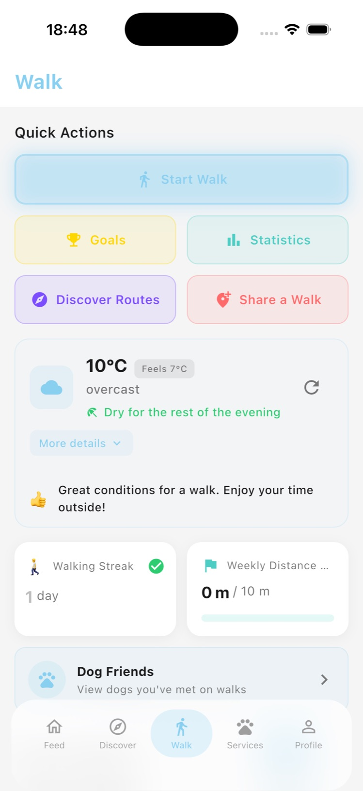
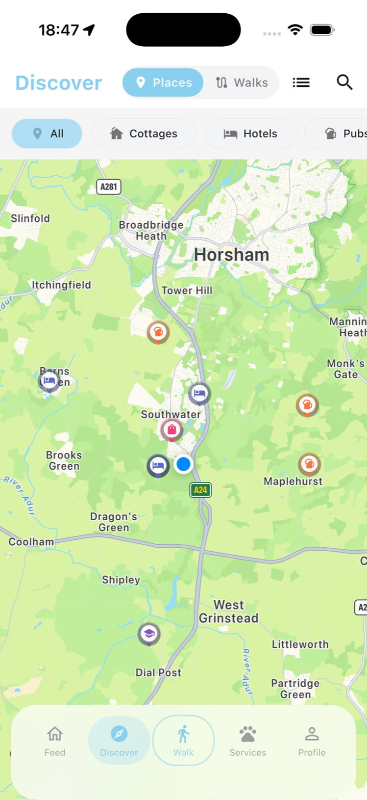
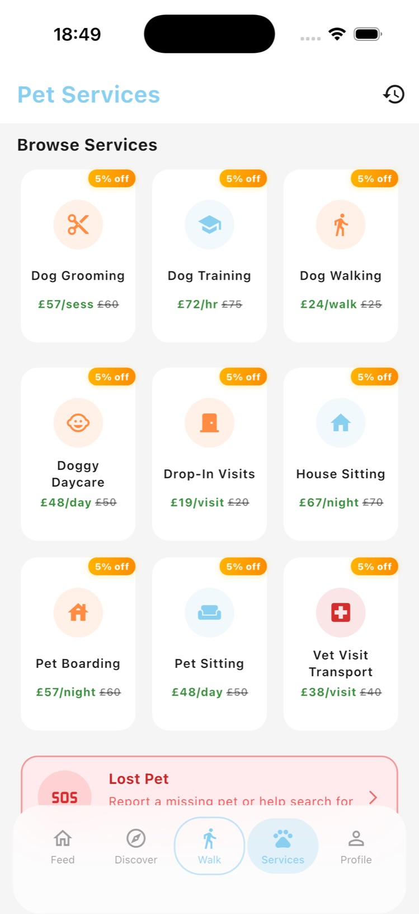
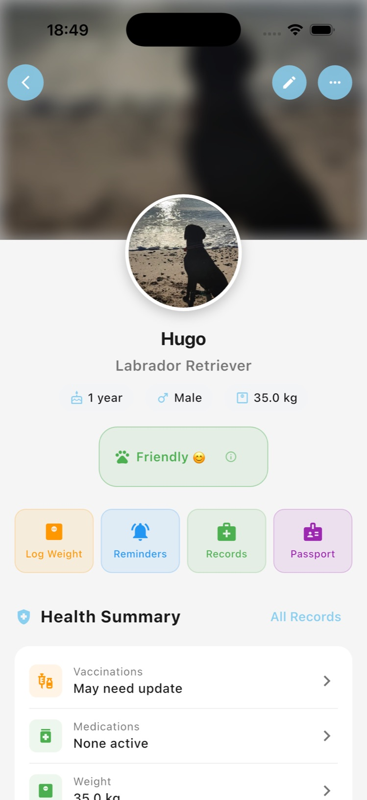

Everything your dog's life needs, in one app.
Walk tracking, local dog-friendly places, trusted care and a community that looks out for each other. Free for owners, with no subscription and no adverts.
Built around the daily walk
Screenshots from the app as it is today.

Walk
Weather, goals, streaks and a one-tap start

Discover
Dog-friendly places near you

Care
Walkers, groomers, sitters and trainers

Pet passport
Health records, temperament and profile

Feed
Walks and photos from owners you follow
Most bad encounters start with not knowing.
Your dog is off the lead and enjoying it. Then you see another dog in the distance, on a lead.
Is that dog friendly, nervous or reactive? You try to read its body language from fifty yards, catch the owner's eye, and end up calling "Is he friendly?" across the park while your dog is already on the way over.
Usually it is fine. When it is not, it can mean an injury, a vet bill and a dog that is wary for months afterwards, all for want of one piece of information.
Know before you meet.
Go Rocco shows you the temperament of nearby dogs before you are close enough for things to go wrong. Set your own dog's profile, see others on the map, and decide whether to say hello or give space.
Friendly
Social and approachable. Happy to play and fine to approach.
Cautious
May be shy or nervous around other dogs. Approach slowly and let them set the pace.
Protective
Loyal but may be territorial. Ask the owner before approaching.
Reactive
Needs space and distance. Keep your dog away and give them room.
Training
Learning social skills. Be patient and give them space to practise.
In heat
Give extra space and avoid close contact. Keep your dog at a distance.
Three steps to a calmer walk
Set up your dog
Add your dog's name, breed and temperament. Be honest: it helps everyone stay safe.
Start your walk
Open the app and you appear on the map to other dog owners walking nearby. A privacy mode sets who can see you, and you can block anyone at any time. Blocking is mutual: you won't see them and they won't see you.
Know before you meet
See approaching dogs' temperaments at a glance, and choose your route with that in mind.
A proper record for every dog
Profiles, health records and a digital passport: everything you and your vet need, in one place.
Pet profiles
Full profiles with breed (2,000+ breeds), age, weight, photos, temperament badges and energy level. Unlimited profiles, all free.
Health dashboard
Track vaccinations, medications, vet appointments, weight history and allergies, with reminders so nothing gets missed. Export as a PDF for your vet.
Pet passport
A complete digital ID with a QR code: microchip, insurance, vet details and vaccination history. Share by link or export as a PDF.
Access sharing
Give family, carers or a dog walker access with their own permissions: owner, caretaker, walker or viewer. Useful for shared households.
Everything in the app, and all of it free
Every feature is free for dog owners. No subscription, no adverts.
GPS walk tracking
Track routes, distance, pace and calories with live GPS. Auto-pause when you stop, add photos, set goals, build streaks and review your full walk history. Works offline too.
Lost pet alerts and SOS
Report a missing pet and alert the Go Rocco community nearby. The SOS button shares your live location with your emergency contacts.
Social feed and stories
Share photos from your walks, follow other dog owners and get to know the dogs in your area.
Dog-friendly places
Find cafés, parks, pubs and beaches that genuinely welcome dogs, all verified by real owners.
Achievements and rewards
Earn points and badges for walks, streaks and community contributions. Complete daily challenges, collect login rewards and climb the leaderboards.
Hazard reporting
Community-reported dangers such as broken glass, aggressive animals, flooding or road works, shown on the map so you can plan a safe route.
Daily challenges
Time-based goals such as "Walk 50km this month" or "Visit 5 new dog-friendly places". Complete them to earn bonus points and exclusive badges.
Live temperament map
See nearby dogs' temperaments at a glance: friendly, cautious, protective, reactive, training or in heat.
Apple Watch and HealthKit
Walk stats on your wrist, Live Activities on your lock screen and automatic syncing with Apple Health, plus Siri Shortcuts for hands-free control.
Ask Rocco
Dog care answers from the built-in AI assistant. Ask about training, health, behaviour or anything breed-specific.
Safety zones
Set geofence boundaries for your walks and get an alert if you or your dog leave the safe area.
Pack walks
Walk with friends, track group stats and see everyone on the map in real time.
When seconds count
Go Rocco is for the ordinary walks, and for the ones that go wrong.
SOS alert button
One tap sends your live location to your emergency contacts. Whether you have had a fall, met an aggressive dog or feel unsafe, they know exactly where to find you.
Walk timer
Set how long you expect to be out. If you don't check back in, your trusted contact gets an automatic alert with your last known location. Made for solo walkers.
Location sharing
Share your walk in real time with family or friends, so they can follow along from home. Useful in remote areas or after dark.
Nearby dog detection
See other Go Rocco dogs walking nearby on the map, so you know who is close before your paths cross. Encounters are logged for you to review afterwards.
Safety zones
Set geofenced safe areas and get notified if you leave them during a walk. Good for keeping to familiar routes or watching an off-lead area.
If your dog goes missing, the neighbourhood is looking.
It is every owner's worst day. With Go Rocco you are not searching alone.
Report missing
One tap alerts Go Rocco users in your area. Your dog's photo, last known location and description go out straight away.
Community search
Nearby users get a push notification with your dog's details, so more people are looking within minutes.
Sighting reports
Anyone who spots your dog can report the sighting with a location. Follow the reports on a live map to narrow the search.
Reunion
When your dog is found, mark them safe with one tap and everyone who was looking is told.
Worth doing now: keep your dog's profile photo up to date. It could be the difference between found and still looking.
Dog care questions, answered at any hour
A built-in AI assistant for dog care. Ask about health, training or nutrition, or how something in the app works. It is not a vet, and it says so.
Dog care Q&A
Ask about symptoms, diet, training, breed-specific concerns or anything else to do with dogs, at any time of day.
In-app help
Not sure how something works? Ask Rocco for step-by-step guidance on any feature, from setting up profiles to booking services.
Recommendations
Suggestions for places, events and content based on your preferences, your location and your dog's profile.
A community, not just an app
Share your walks, mark the milestones and get to know the owners near you.
Feed, stories and reels
Share photos and videos on your feed, post 24-hour stories with stickers and text, or make short reels. Like, comment, save and share.
Achievements and XP
Earn badges for walks, distance milestones and helpful community actions, and level up your profile.
Walk streaks
Build a daily streak for walking consistently, and compare with friends on the leaderboards.
Follow friends
Find and follow other dog owners in your area. See their walks and their dogs, and arrange to meet up.
Real-time messaging
Chat one to one or in groups, with read receipts, typing indicators, voice messages and message requests.
Notifications you control
Preferences for each category, quiet hours and a weekly digest email. Stay informed without being overwhelmed.
Your local dog community, organised
Groups, meetups, walking partners and honest reviews of the places you go.
Create and join groups
Find or create groups by breed, location or activity. Public or private with member approval, group posts, group events and full moderation tools.
Dog-friendly meetups
Local dog walks, charity fundraisers, training sessions and social events happening near you.
Schedule together
Find compatible dogs and arrange regular walks. Good for socialising puppies or matching energy levels.
Reviews and check-ins
Rate and review dog-friendly places, and check in to share where you are with friends. Reviews come from dog owners who have been there.
Claim your listing
Business owners can verify and claim their venue, respond to reviews and manage their presence on Go Rocco. Free to claim →
Book people other owners already trust
Walkers, groomers, sitters, boarders, daycares and trainers near you, with their DBS, insurance and licence checks shown as badges. Book, share your dog's profile for the visit, chat, and get a report card, all without leaving Go Rocco.
Trusted walkers
Verified dog walkers with reviews, qualifications and GPS-tracked walks you can follow in real time.
Local groomers
Groomers in your area with photos of their work, ratings and online booking.
Home from home
Overnight or day care with people your dog already knows from the Go Rocco community.
Professional trainers
Qualified trainers for obedience, behaviour, puppy socialisation and more. Book sessions and track your dog's progress.
Day and overnight care
Daycare and overnight boarding from vetted providers. Check availability, read reviews and book.
Meet before you book
An introduction before the first booking, so your dog and their new carer can meet first.
Updates after every visit
Photos and notes on your dog's behaviour, activities and condition after each service, so you know how their day went.
Walker, groomer, sitter or trainer? Run your business on Go Rocco for free, with 0% on your own clients, forever. Go Rocco Business →
A shop being built maker by maker
We cleared the shelves of drop-shipped filler. What goes back on them is smaller and far better: independent British makers, chosen one at a time. Treats, toys, leads and beds genuinely worth buying for a dog.
Independent and made in Britain
Every brand gets its own page with its story and where things are made. One person at a kitchen table is as welcome as a small workshop.
Hand-picked, and insured
A person at Go Rocco reads every application. Makers show product liability insurance before anything goes on sale, and reviews come only from real purchases.
Do you make something for dogs?
We are signing our founding brands now: fair terms, and a shop that puts your name on the shelf instead of burying it under a supplier catalogue. Apply to sell →
Most incidents come from a lack of information, not a bad dog.
Go Rocco gives owners what they need to know to make a better decision, while there is still time to make it.
- See approaching dogs' temperaments before you meet
- SOS button sends your live location to emergency contacts
- Walk timer alerts trusted contacts if you don't check back in
- Lost pet alerts notify the community nearby straight away
- Simple privacy controls with mutual blocking
Prevention first
Most incidents are preventable with the right information at the right time.
Community powered
The more owners who join, the safer walks become for everyone.
No judgement
Nervous dogs aren't bad dogs. They need owners who understand them.
The ones we are asked most
Is Go Rocco really free?
Yes. Every feature is free for every dog owner: GPS walk tracking, the live temperament map, unlimited pet profiles, health records, lost pet alerts, SOS, safety zones, group chats, Ask Rocco, places and achievements. There is no subscription and there are no adverts. The people who look after your dog can use Go Rocco Business free too; here's how the lights stay on.
Is Go Rocco available on Android?
Yes. Go Rocco is available on both iOS and Android. Download it from the App Store or Google Play.
How does the temperament map work?
When you set your dog's temperament (friendly, cautious, protective, reactive, training or in heat), other nearby Go Rocco users can see it on the map. You see theirs too, so you know whether to approach or give space before you are close enough for things to go wrong. All locations use a 50-metre fuzzy radius to protect privacy.
Is my location data safe?
Yes. We never share your exact location: the map uses a 50-metre fuzzy radius so no one can pinpoint where you are. Your data is encrypted, stored securely, and we comply fully with UK GDPR. Read our Privacy Policy for the full details.
Get Go Rocco
Free on iPhone, Android and the web. No subscription, no adverts.